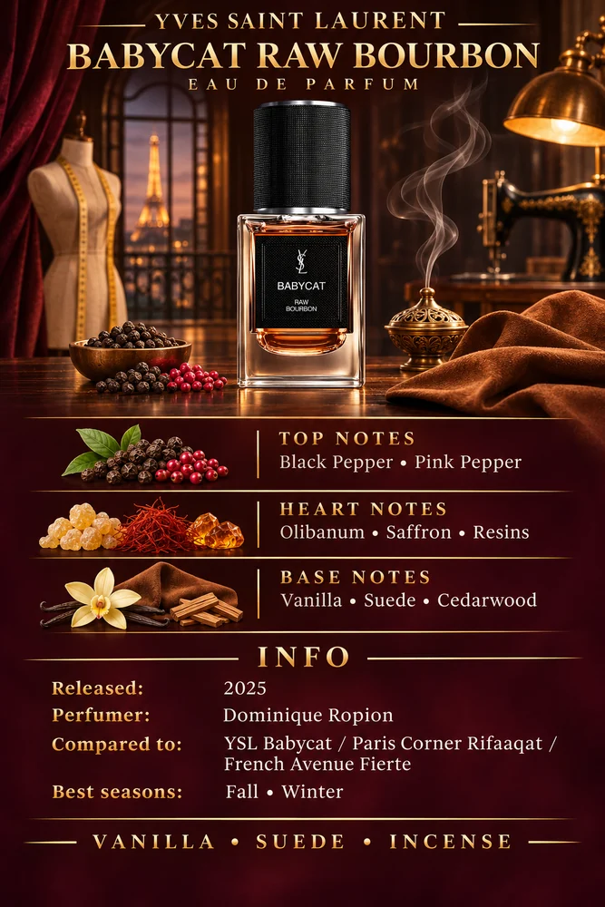
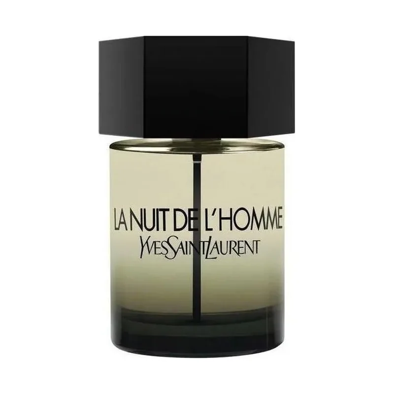
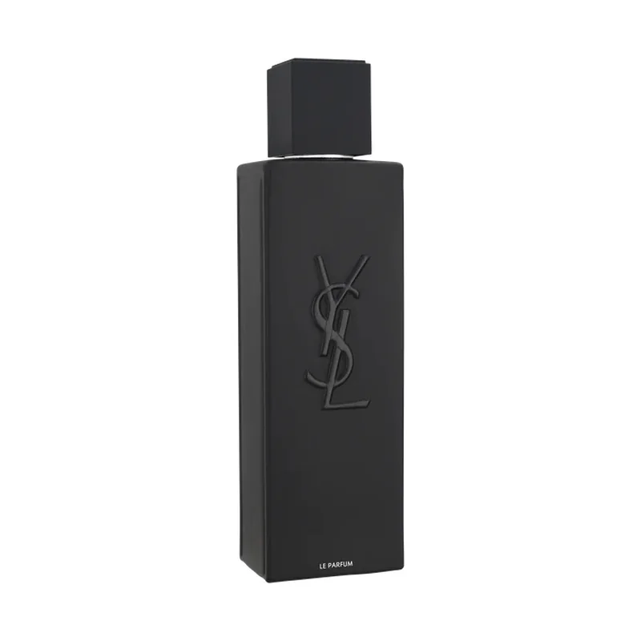

Yves Saint Laurent
Babycat Raw Bourbon Eau de Parfum
β Beta Designer · Eau de Parfum · 2025 Future buy
Randy's rating—/10
Public rating9/10
Overall R—/25
Normalized N—
R and N are left blank until Randy has worn and rated it. How scores work
Notes
Top notes
- black pepper
- pink pepper
Heart notes
- olibanum
- saffron
- resins
Base notes
- vanilla
- suede
- cedarwood
Details
| House | Yves Saint Laurent |
|---|---|
| Type | Designer · β Beta |
| Concentration | Eau de Parfum |
| Released | 2025 |
| Perfumer | Dominique Ropion |
| Scent family | Spicy, Amber & Resin, Sweet & Gourmand |
| Best seasons | Fall, Winter |
| Similar to | YSL Babycat Paris Corner Rifaaqat and French Avenue Fierte |
Sources
Fragrantica 4.54/5 (about 9.1/10) from 1,827 votes; no Parfumo page for Raw Bourbon yet (original Babycat is 8.3/10 on Parfumo). Rounded to 9. Checked 2026-11-14.
Other Suggestions
-

Yves Saint LaurentLa Nuit de L'Homme Eau de ToiletteRandy9Public 9N 0.900 -
 Yves Saint LaurentMYSLF Eau de ParfumRandy—Public 9N —
Yves Saint LaurentMYSLF Eau de ParfumRandy—Public 9N — -

Yves Saint LaurentMYSLF Le ParfumRandy—Public 8N — -
 DiorSauvage Eau de ParfumRandy9Public 8N 0.852
DiorSauvage Eau de ParfumRandy9Public 8N 0.852 -
 Viktor & RolfSpicebomb ExtremeRandy8.75Public 9N 0.887
Viktor & RolfSpicebomb ExtremeRandy8.75Public 9N 0.887